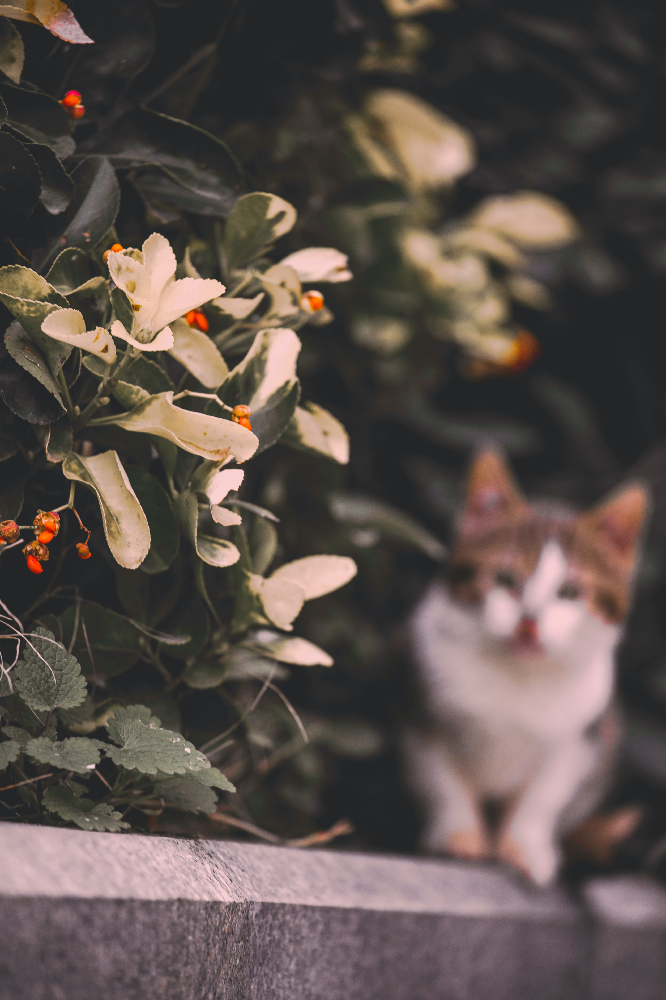

LIFE
시 모음
- 문정희 시인
- 류시화 시인
- 정지용 시인



문정희
1947년 5월 25일 전남 보성 태생. 진명여고를 거쳐 동국대 국문과 및 동 대학원을 졸업하였다.
진명여고 재학중 첫 시집 『꽃숨』(1965)을 발간했다. 1969년 『월간문학』 신인상에 「불면」과 「하늘」이 당선되어 문단에 등단하였다. 이후 『문정희 시집』(1973), 『혼자 무너지는 종소리』(1984), 『아우내의 새』(1986), 『그리운 나의 집』(1987), 『제 몸속에 살고 있는 새를 꺼내어 주세요』(1990), 『남자를 위하여』(1996), 『오라, 거짓 사랑아』(2001), 『모든 사랑은 첫사랑이다』(2003), 『양귀비꽃 머리에 꽂고』(2004), 『나는 문이다』(2007), 『찔레』(2008) 등 많은 시집을 냈다. 그리고 1975년 시극집 『새떼』로 현대문학상을 수상하기도 했다.
그의 시는 낭만주의적 정신을 기본 색채로 하고 있으며, 청순한 감각과 명징한 언어로 형상화되었다.
그의 시적 태도는 “아니어요. 작은 햇살에도 얼굴 부끄러운/ 풀꽃 같은/ 사랑 하나로// 높은 벽에 온몸 부딪고/ 스러지고 싶어요”(황진이의 노래 1)에서 보여주듯 세계 자체를 직유 또는 은유적으로 받아들이고 이를 자신의 감정과 연결시켜 표현하였다. 그리하여 “~이다”, “~되다”, “~싶다”의 유비적 세계에 대한 서정적 인식을 바탕으로 사랑, 부끄러움, 고뇌, 자유, 슬픔의 센티멘털한 감정을 정감있게 그려내는가 하면, 「감자」, 「사랑하는 사마천 당신에게」, 「남한강을 바라보며」 등에서처럼 설화적 모티프를 현실과 결부시켜 그려내기도 하였다.

수상내역
1969년 작품명 '불면' - 월간문학 신인상에 「불면」과 「하늘」이 당선
작품명 '하늘' - 월간문학 신인상에 「불면」과 「하늘」이 당선
1975년 작품명 '새떼' - 현대문학상
작품목록
꽃숨
문정희시집
새떼
하늘보다 먼 곳에 매인 그대
혼자 무너지는 종소리
아우내의 새
그리운 나의 섬
우리는 왜 흐르는가
찔레
너의 들판에 바람꽃으로
제 몸 속의 새를 꺼내주세요
오늘 같은 날, 나는 머리를 자르고 싶어요
우리가 서로를 알지 못했던 시간
남자를 위하여
이 세상 모든 사랑은 무죄이다
류시화
류시화(1958년 ~ )는 대한민국의 시인이자 번역가이며 본명은 안재찬이다. 대광고등학교와 경희대학교 국어국문학과를 졸업하였고 현재는 서울 명륜동에 작업실을 두고 있다.
류시화는 시인이자 번역가로 1958년 충청북도 옥천에서 태어났다. 본명은 안재찬이다. 대광고등학교 졸업 후 경희대학교 국어국문학과에 문예장학생으로 입학하고 1980년 <아침>이라는 시로 《한국일보》 신춘문예에 등단했다. 1980년-1982년까지 박덕규, 이문재, 하재봉 등과 함께 《시운동》 동인으로 활동했다. 이 기간에 《시운동》에서 50여 편의 시를 발표하다가 '시인은 전쟁이 나도 다락방에서 사랑의 시를 쓸 수 있어야 한다'는 말과 함께 1983년에 활동을 중단한다. 이 후 그는 안재찬이라는 본명을 버리고 류시화라는 이름을 사용하며 명상서적 번역 작업을 시작한다. 또한 1988년부터 미국과 인도 등지의 명상센터에서 생활하고 인도여행을 통해 명상가를 자처하기 시작, 인도 대표 명상가인 라즈니쉬의 주요서적들을 번역한다. 그는 1년에 약 100권의 명상서적을 원서로 읽는 독서광이라고 전해지며, 16년 동안 겨울이 오면 인도를 방문하는 여행가이다. 1991년 첫 시집 《그대가 있어도 나는 그대가 그립다》를, 1996년 두 번째 시집 《외눈박이 물고기의 사랑》을 펴냈다. 2012년 세 번째 시집 《나의 상처는 돌 너의 상처는 꽃》을 출간했다.
혹자는 류시화의 시를 <입으로 순화된 시>라고 표현한다. 그는 시를 입으로 수백번 되뇌면서 결국, 독자들에게 낭송되어 쉬운 시를 만들어낸다. 시인 류시화가 되고 난 후 명상서적 번역을 시작했고 1988년부터 시작한 미국, 인도의 명상센터 생활과 인도여행을 통해 그는 명상가가 된다. 그는 2009년으로 16번째 인도를 방문하는 여행가이기도 하다.
독자의 평가
류시화의 시집 《그대가 곁에 있어도 나는 그대가 그립다》는 1989년~1998년 동안 21번 베스트셀러에 올랐고, 그는 《시로 여는 세상》 2002년 여름호에서 대학생 530명을 대상으로 한 설문조사에서 가장 좋아하는 시인에 윤동주 김소월 한용운과 함께 이름을 올렸으며 명지대학교 김재윤 교수의 논문 설문조사에서 20세기 가장 위대한 시인 10위, 21세기 주목해야할 시인 1위, 평소에 좋아하는 시인으로는 윤동주 시인 다음으로 지목된다. 또한 류시화의 시는 라디오에서 가장 많이 낭송되는 시이기도 하다.[출처 필요](저작권협회 집계)
수상내역
2012년 제 25회 경희문학상
시집
1991년 《그대가 곁에 있어도 나는 그대가 그립다》
1996년 《외눈박이 물고기의 사랑》
2005년 《사랑하라 한번도 상처받지 않은 것 처럼》
2010년 《한 줄도 너무 길다》
2012년 《나의 상처는 돌 너의 상처는 꽃》
정지용
정지용(鄭芝溶, 1902년 6월 20일 (음력 5월 15일)[1] ~ 1950년 9월 25일)은 대한민국의 대표적 서정시인이다. 아명은 지룡(池龍)이다.[2] 대한민국에서는 납북 여부와 사인이 모호하여 한때 이름이 '정X용'으로 표기[3]되고 그의 시가 금기시 되었으나, 1988년 해금되어 국어 교과서에도 그의 시 향수가 수록되었다.
충청북도 옥천군 옥천면 하계리에서 한의사인 정태국과 정미하 사이에서 맏아들로 태어났다. 11세 때 송재숙(宋在淑)과 결혼했으며, 1914년 아버지의 영향으로 로마 가톨릭에 입문하여 '방지거(方濟各, 프란치스코)'라는 세례명을 받았다. 옥천공립보통학교를 마치고 휘문고등보통학교에 입학해서 박종화·홍사용·정백 등과 사귀었고, 박팔양 등과 동인지 〈요람〉을 펴내기도 했으며, 신석우 등과 문우회(文友會) 활동에 참가하여 이병기·이일·이윤주 등의 지도를 받았다. 1919년 3·1 운동이 일어나자 이선근과 함께 '학교를 잘 만드는 운동'으로 반일(半日)수업제를 요구하는 학생대회를 열었고, 이로 인해 무기정학 처분을 받았다가 박종화·홍사용 등의 구명운동으로 풀려났다.
1923년 4월 교토에 있는 도시샤대학 영문과에 입학했으며, 유학시절인 1926년 6월 유학생 잡지인 〈학조 學潮〉에 시 〈카페 프란스〉 등을 발표했다. 1929년 졸업과 함께 귀국하여 이후 8·15 해방 때까지 휘문고등보통학교에서 영어교사로 재직했고, 독립운동가 김도태, 평론가 이헌구, 시조시인 이병기 등과 사귀었다. 1930년 김영랑과 박용철이 창간한 〈시문학〉의 동인으로 참가했으며, 1933년 〈가톨릭 청년〉 편집고문으로 있으면서 이상(李箱)의 시를 세상에 알렸다. 같은 해 모더니즘 운동의 산실이었던 구인회(九人會)에 가담하여 문학 공개강좌 개최와 기관지 〈시와 소설〉 간행에 참여했다.
1939년에는 〈문장〉의 시 추천위원으로 있으면서 박목월·조지훈·박두진 등의 청록파 시인을 등단시켰다. 1945년 해방이 되자 이화여자대학교로 옮겨 교수 및 문과과장이 되었고, 1946년에는 조선문학가동맹의 중앙집행위원 및 가톨릭계 신문인 〈경향신문〉 주간이 되어 고정란인 '여적'(餘適)과 사설을 맡아보았다. 1948년 대한민국 정부수립 후에는 조선문학가동맹에 가입했던 이유로 보도연맹에 가입하여 전향 강연에 종사했다.
1950년 한국 전쟁이 터지고 피난길에 오르지 못한 채 서울에 남아있게 된다. 그리고 인천 상륙 작전이 끝나고 대한민국 국군이 수복한 서울에서 그의 모습은 찾을 수 없었다. 오랫동안 그는 납북되어 조선민주주의인민공화국에서 사망한 것으로 추정되어 왔으며, 정지용 사이버 문학관에는 계광순의 증언을 바탕으로 '6ㆍ25전쟁이 일어나자 정치보위부로 끌려가 구금됨. 정인택, 김기림, 박영희 등과 서대문형무소에 수용되었다가 평양 감옥으로 이감. 이광수, 계광순 등 33인이 함께 수용 되었다가 그 후 폭사당한 것으로 추정'이라고 기술하고 있다.[4] 그러나 전쟁 당시 월북하였다가 2000년 남한을 방문한 정지용의 둘째 아들은 북조선에서의 아버지의 행적을 전혀 알지 못하였고, 2003년 문학평론가 박태상은 그가 납북되던 중 1950년 9월 25일 미군의 동두천 폭격에 휘말려 소요산에서 폭사하였다는 내용의 자료를 공개하여[5] 정지용이 실제 납북되어 북조선에서 활동하였는가에 의문이 제기되기도 하였다. 단, 박태상이 공개한 자료는 북조선 언론 자료에 기초한 것이어서 남한에서는 신빙성을 크게 인정받지 못하였고, 현재까지 정지용의 정확한 사망 일자나 원인에 대해서는 확실한 사실이 확인되지 않고 있다.
작품 경향
시인 정지용은 초기엔 모더니즘과 종교적(로마 가톨릭) 경향의 시를 주로 발표하였다. 그러나 이보다는 널리 알려진 작품 <향수>에서 보이듯이 초기엔 서정적이고 한국의 토속적인 이미지즘의 시를 발표함으로써 그만의 시 세계를 평가 받고 있으며 전통지향적 자연시 혹은 산수시라 일컫는다.
대표작품
〈향수〉
〈유리창〉
〈바다9〉
〈비〉
〈장수산〉
소설 〈삼인〉
<춘설>
<고향>